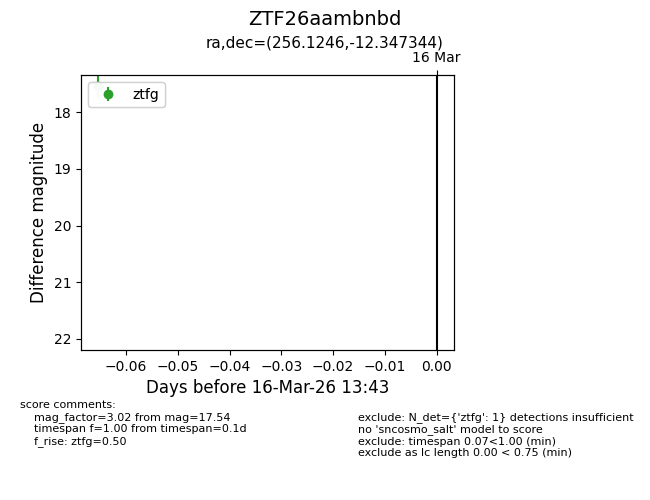
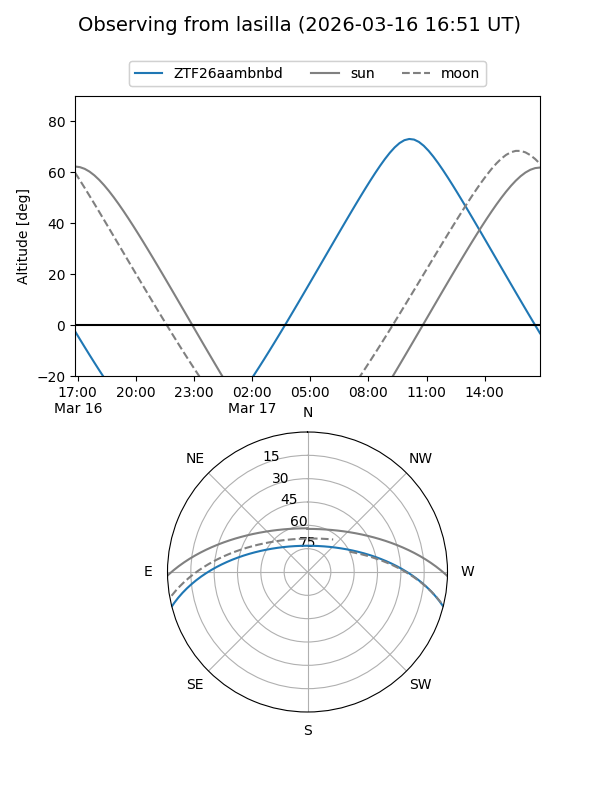
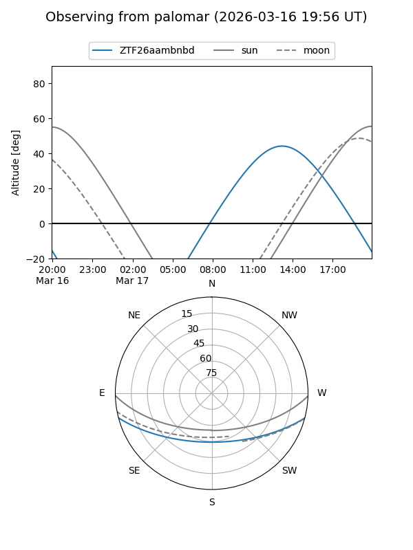

ZTF26aambnbd
Target ZTF26aambnbd at 2026-03-16 13:45
Aliases and brokers:
FINK: link
Lasair: link
ALeRCE: link
alt names
ZTF26aambnbd (ztf,fink_ztf)
Coordinates:
equatorial (ra, dec) = 256.1246,-12.34734
equatorial (HMS+DMS) = 17:04:29.90,-12:20:50.44
galactic (l, b) = (8.8080,+17.07391)
Flags:
Photometry:
last ztfg=17.54
1 ztfg detections
Lightcurve

Visibility


Additional plots